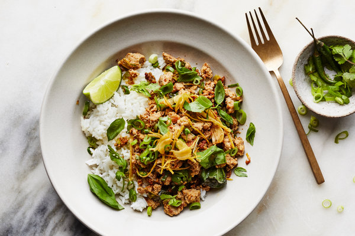

Spicy Turkey Stir-Fry with Crisp Garlic and Ginger
Don't be scared by the long recipe title, this is super easy and delicious!
Ingredients
- 2 tbsp neutral oil (like safflower or grapeseed)
- 4 garlic cloves, thinly sliced
- 1 knob ginger, cut into matchsticks
- Sea salt
- 2 tbsp coconut oil or more neutral oil
- 3 scallions, thinly sliced, white and green parts separated
- 1 lb ground turkey
- 2 tbsp lime juice
- 1 tbsp fish sauce
- 1/2 tsp soy sauce
- 1/2 tsp sugar or honey (optional)
- Rice or noodles
- 2/3 cup cilantro, chopped
- 1/3 cup torn basil leaves
Instructions
- In a cold 12-inch skillet, combine oil, garlic and ginger. Place over medium heat until sizzling, then continue to cook, stirring frequently, until garlic and ginger are golden brown, 5 to 7 minutes. Transfer with a slotted spoon to a paper towel-lined plate and sprinkle lightly with salt.
- Add coconut oil to pan, then stir in scallion whites and cook until starting to brown, about 2 minutes. Stir in red-pepper flakes and cook for 1 minute.
- Stir in turkey, raise heat to medium-high, and cook, breaking up meat with a spoon, until golden and crisp, about 7 minutes. Don’t stir the meat too much, so it can turn deep brown.
- Remove pan from heat and stir in lime juice, fish sauce and soy sauce. Taste and add more lime juice, red-pepper flakes, soy sauce and sugar or honey if you like.
- Gently mix about two-thirds of the fried garlic and ginger into the turkey. Serve turkey over rice, topped with cilantro, basil and scallion greens and garnish with remaining fried ginger and garlic.